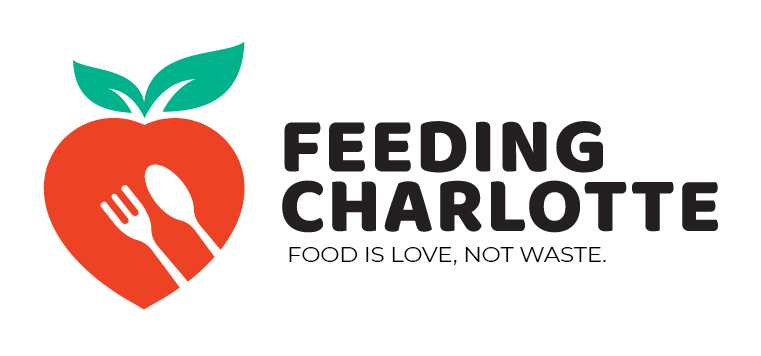
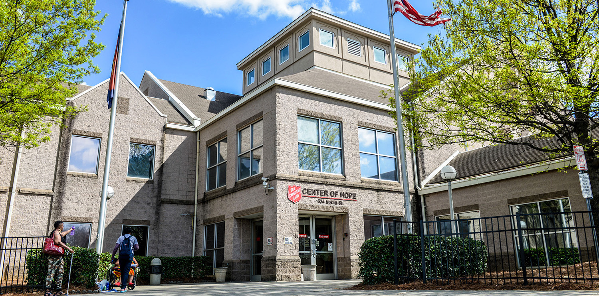
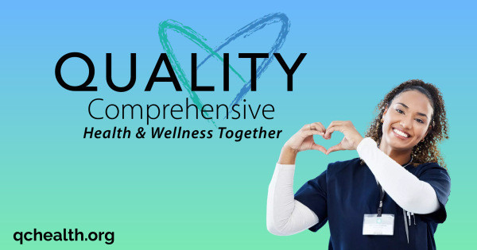

FEED MY PEOPLE: Providing Nourishment, Inspiring Hope
In the heart of Charlotte, North Carolina, a beacon of compassion shines bright through the Feed My People program. Dedicated to eradicating hunger and nourishing the community's most vulnerable, Feed My People is a lifeline for those in need.
We believe in the transformative power of a warm meal shared with compassion. Through our outreach initiatives, we not only provide food but also foster a sense of community and belonging. From weekly meal gatherings to educational workshops on nutrition and culinary skills, we empower individuals to take charge of their health and well-being. As long as hunger persists in our community, we remain steadfast in our commitment to serve. Together, with your support, we can build a brighter future where no one goes hungry. Join us in the fight against hunger. Together, let's feed our people, nourish their souls, and inspire hope for a better tomorrow.
SHELTER INFORMATION: Emergency Shelter, Providing Refuge and Support
In times of crisis or uncertainty, these shelters stand as pillars of compassion, ensuring that every person who walks through their doors is met with respect, dignity, and a helping hand.
MENTAL HEALTH RESOURCES: Counseling and Restoring Hope
Various organizations, such as Urban Ministry Center and the Salvation Army, offer essential services like counseling, therapy sessions, and access to psychiatric care. Through collaborative efforts with local healthcare providers and government initiatives, these resources aim to address the unique mental health challenges faced by individuals experiencing homelessness, fostering a supportive environment for healing and recovery.
